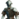
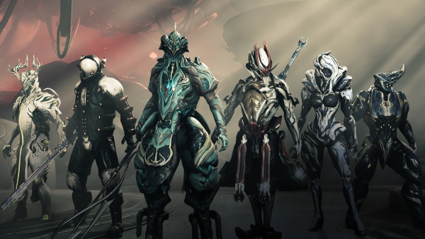

OverviewWarframes are divided into a collection of diverse models, each of which personifies a great warrior spirit. Players may don the ExcaliburIcon272 Excalibur Warframe to gain its prowess with bladed weapons, for instance. Each model of Warframe is moreover highly reconfigurable, meaning players can tailor their choice of Warframe to fit a multitude of playstyles. While certain Warframes excel in a particular situation, none are limited to a singular role and no role demands the use of a singular Warframe. Players customize Warframes via the installation of mods which can upgrade their Warframe Attributes, endow them with additional utilities, and even alter their abilities. Further bonuses can be achieved by equipping add-ons, such as Arcane Helmets or Arcane Enhancements. Each Warframe features four unique and extraordinary activatable powers that allow for a large degree of control over the surrounding environment. Warframes also possess passive abilities – powers that activate on their own accord. These powers allow a Tenno to cast virtually anything, with examples ranging from devastating waves of energy to bullet-nullifying barriers or even mass healing. Warframes greatly augment the physical abilities of a Tenno as well, affecting natural skills like swordsmanship, marksmanship and, most notably, acrobatics. New players start the game by selecting their first Warframe, from the Excalibur, Mag, or  Volt Warframes, and playing through the tutorial. As the player progresses, they may craft or buy other Warframes from the full list of offerings. As of Hotfix 27.0.11.3, there are a total of 70 Warframes consisting of both original models and special variants. Only one of these special variants is exclusive to certain groups of players; Excalibur PrimeIcon272 Excalibur Prime is a Founders-exclusive. |